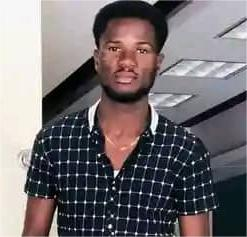

Notre Équipe
Découvrez les membres qui contribuent à la réussite du projet ECOPORC+ d'Haïti.

ERODE MONDELUS
Coordonnateur Général et Fondateur d'ECOPORC+ d'HaïtiErode Mondelus est étudiant finissant en agronomie à l'Université d'État d'Haïti (Campus Henry Christophe de Limonade), avec une spécialisation en production animale et végétale. Passionné par l'innovation agricole, le développement rural et la protection de l'environnement, il consacre ses efforts à la promotion de systèmes de production durables capables d'améliorer la sécurité alimentaire et les conditions de vie des communautés rurales. Fondateur du projet ECOPORC+ d'Haïti, il dirige une initiative d'élevage porcin durable visant à produire une viande de qualité tout en réduisant les impacts environnementaux. Le projet sert également de centre de démonstration et de formation pour les éleveurs et les étudiants en agronomie, favorisant le partage de connaissances et l'adoption de bonnes pratiques agricoles. Grâce à sa formation et à ses expériences professionnelles, notamment dans le suivi de systèmes d'irrigation moderne et les diagnostics de territoires agricoles, Erode a développé de solides compétences en gestion de projets, accompagnement technique des producteurs, analyse des systèmes de production et encadrement des jeunes. Son ambition est de contribuer à la modernisation de l'agriculture haïtienne à travers des solutions innovantes, rentables et respectueuses de l'environnement.
Voir le CV
Marie Pierre
Responsable CommunicationExperte en communication numérique et gestion des réseaux sociaux. Elle assure la visibilité du projet auprès du public et des partenaires.
Voir le CV
Samuel Joseph
Responsable TechniqueSpécialiste en élevage porcin et gestion des systèmes agricoles. Il accompagne la mise en œuvre des solutions techniques du projet.
Voir le CV